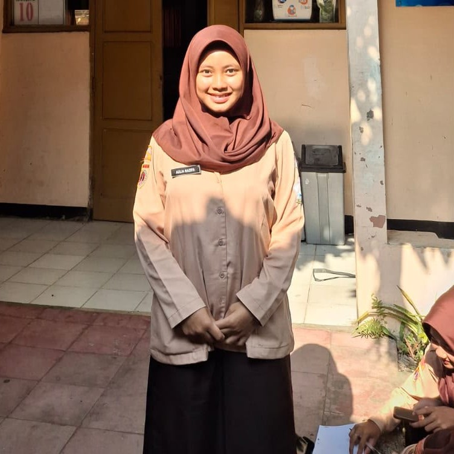
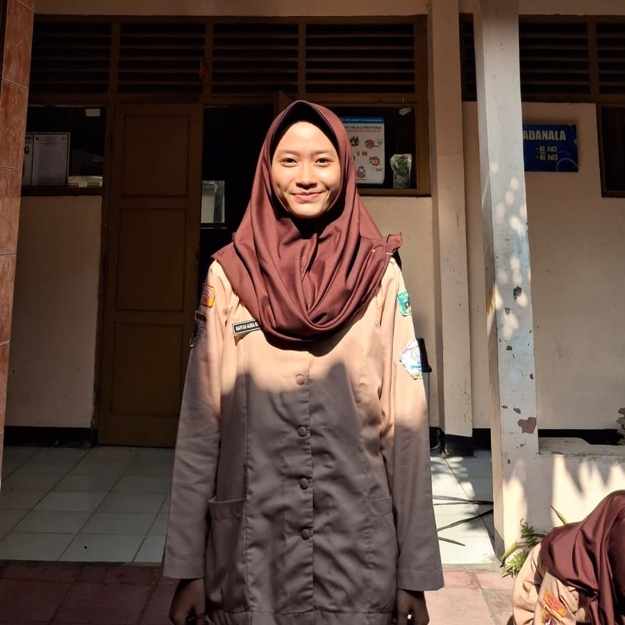
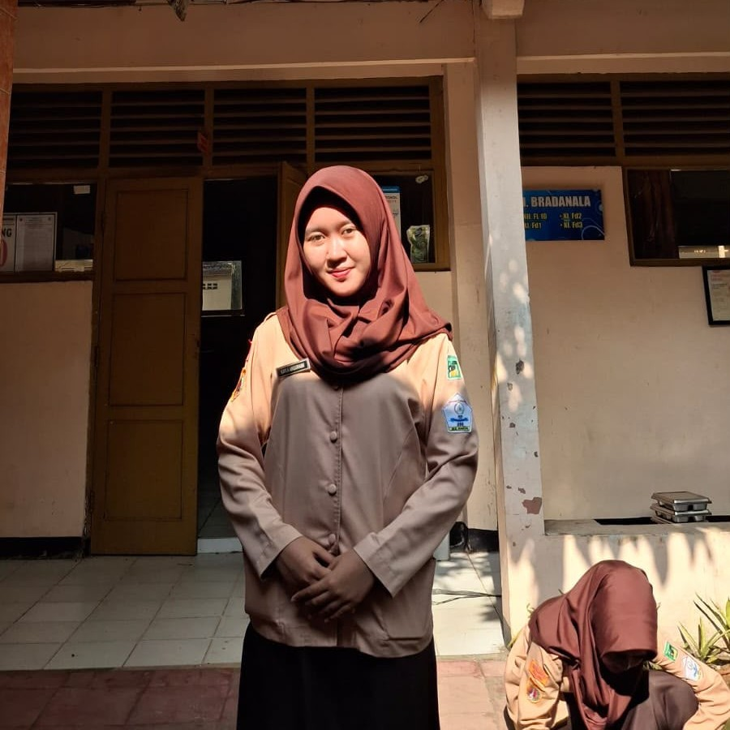
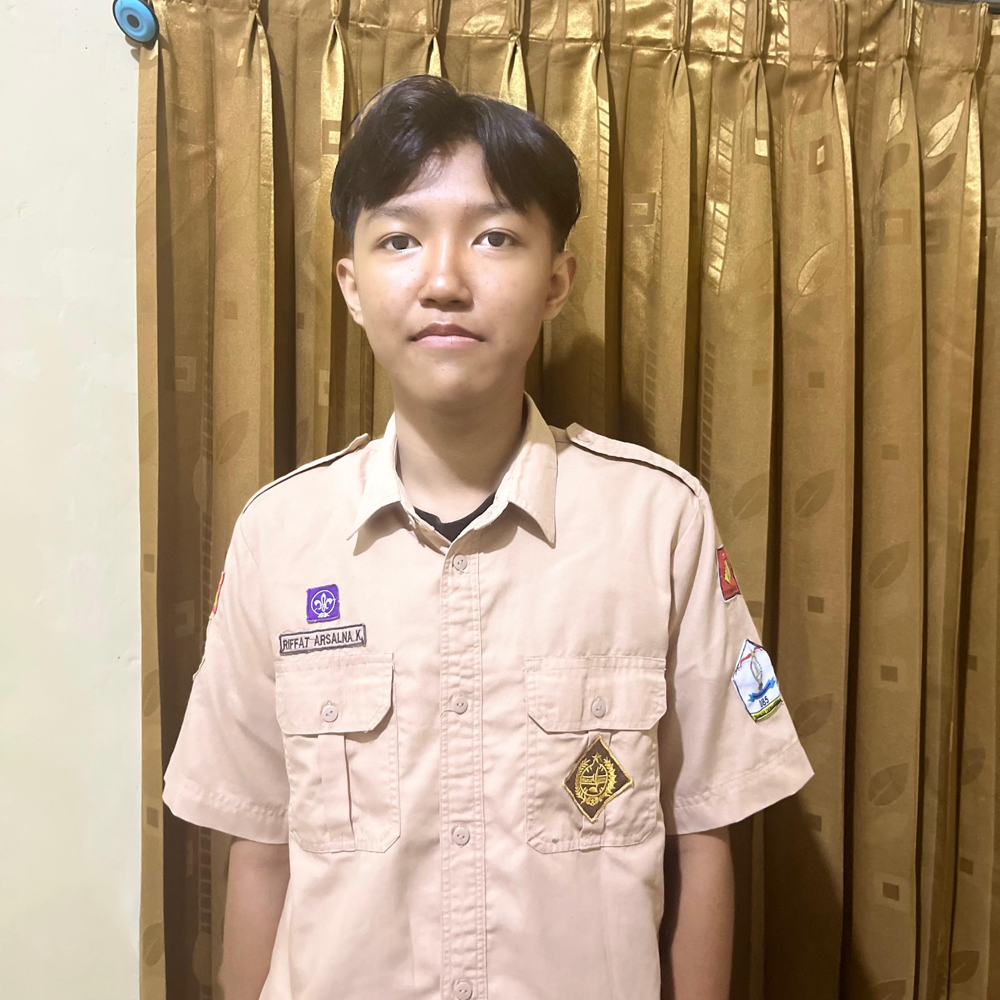
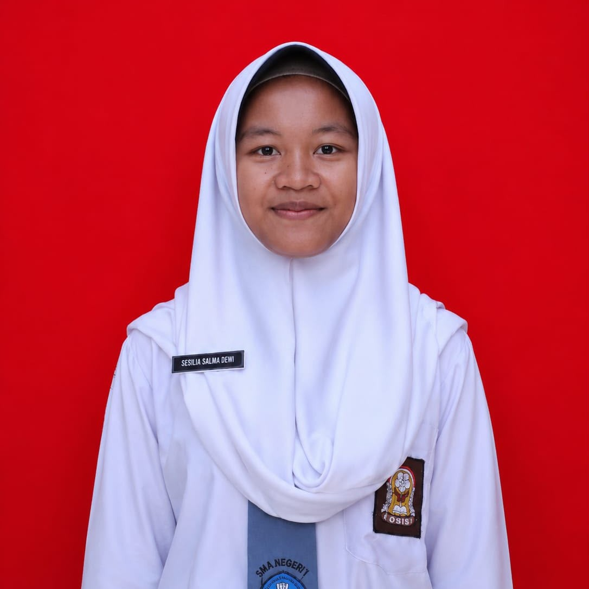

✦ Panduan Kesehatan Remaja
Mulai Hidup Sehat untuk Masa Depan Lebih Baik
Temukan tips pola hidup sehat, olahraga, tidur berkualitas, dan nutrisi yang tepat untuk remaja Indonesia.
Temukan tips pola hidup sehat, olahraga, tidur berkualitas, dan nutrisi yang tepat untuk remaja Indonesia.
Kebiasaan kecil yang dilakukan setiap hari akan membawa perubahan besar untuk kesehatanmu.

Minum minimal 8 gelas air putih per hari membantu tubuh tetap terhidrasi, segar, dan meningkatkan konsentrasi belajar.

Hindari makanan cepat saji berlebihan. Ganti dengan camilan sehat seperti buah dan kacang-kacangan agar tubuh tetap fit.

Mandi teratur dan mencuci tangan dengan sabun adalah langkah sederhana untuk mencegah penyebaran penyakit.
Remaja yang aktif berolahraga 30 menit per hari memiliki risiko 40% lebih rendah mengalami gangguan kesehatan mental.
Pelajari Olahraga →
Minimal 30 menit aktivitas fisik setiap hari membantu menjaga kesehatan jantung dan mental.


Istirahat yang cukup adalah kunci untuk otak yang tajam dan tubuh yang berenergi.

Remaja membutuhkan 8-10 jam tidur setiap malam untuk mendukung pertumbuhan, daya ingat, dan regenerasi sel tubuh.
Begadang mengurangi konsentrasi, melemahkan imun tubuh, dan meningkatkan risiko gangguan kesehatan mental.
Matikan gadget 30 menit sebelum tidur dan ciptakan suasana kamar yang nyaman untuk tidur lebih nyenyak.
Nutrisi yang tepat adalah bahan bakar terbaik untuk tubuh dan otak yang sedang berkembang.

Kaya akan vitamin, mineral, dan serat yang sangat baik untuk sistem pencernaan dan daya tahan tubuh.

Telur, ikan, daging, dan susu mengandung protein yang membantu pertumbuhan otot dan perbaikan sel tubuh.

Sumber energi utama dari nasi, roti, dan kentang untuk mendukung aktivitas sehari-hari dan kegiatan belajar.
Manfaat nyata yang bisa kamu rasakan setiap hari.

Tubuh yang sehat memberikan energi optimal untuk belajar dan beraktivitas sepanjang hari.

Nutrisi dan tidur cukup meningkatkan konsentrasi dan daya ingat saat belajar.

Olahraga rutin dan pola hidup sehat mengurangi stres dan meningkatkan mood positif.

Imun tubuh meningkat sehingga tidak mudah sakit dan siap menghadapi aktivitas padat.
Tim di balik website Healthy Teen ini.

No. Absen: 6

No. Absen: 9

No. Absen: 24

No. Absen: 18

No. Absen: 30

No. Absen: 32